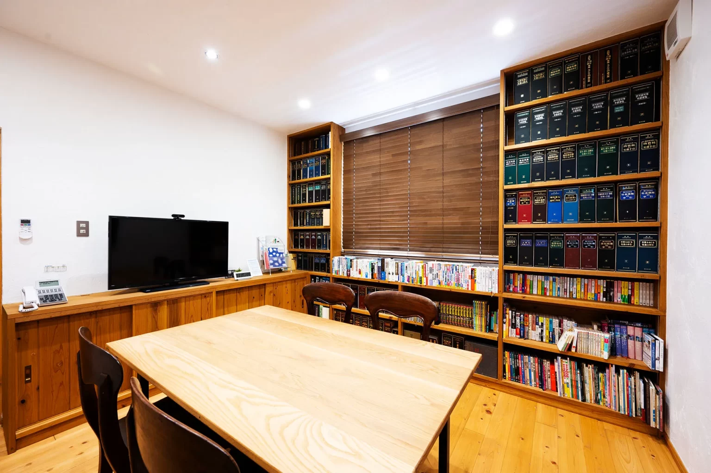

01従業員・求職者を守る
01従業員・求職者を守るカスハラ・
就活等セクハラ対策
基本方針、規程、対応マニュアル。
組織として対応するための仕組みづくり。
雛形一式 22,000円税込／一般価格↗
GODO KEIEI / LABOR SUPPORT
規程づくりも、通知書の見直しも。
使える雛形と、社会保険労務士のサポートで、
自社に合った労務整備を進めませんか。

社会保険労務士法人 合同経営OUR SERVICES
必要なところから選べる、
2つのサポートをご用意しました。
01従業員・求職者を守る基本方針、規程、対応マニュアル。
組織として対応するための仕組みづくり。
 02パート・有期雇用の方へ
02パート・有期雇用の方へ新様式の雛形と記載例から、
既存様式の点検、運用の見直しまで。
顧問先の皆様には、顧問契約に基づき別途ご案内しています。
FIND YOUR SUPPORT
書類を用意するところから、運用の相談まで。
HOW WE SUPPORT YOU
01記載例とガイドに沿って、自社の書類や基本方針を準備します。
02記載内容や就業規則との整合性を、個別チェックで確認します。
 03
03自社向けの整備や担当者への説明、運用確認まで支援します。
APPLICATION FLOW
ご希望のサービスによって、受け取り方が異なります。
顧問先の皆様には、顧問契約に基づき別途ご案内しています。個別チェック＋適用支援（カスハラ対策）、個別チェック・適用支援（労働条件通知書）、社員研修会の納期は要相談です。
SMILE WORK / COLUMN
FAQ
カスハラ・就活等セクハラ対策の雛形一式は、ご入金確認後3営業日以内に、ZIP ファイルをメールに添付してお送りします（14ファイル、約1MB）。労働条件通知書の雛形（無償）は、フォーム送信後の自動返信メールでその場でご案内します。個別チェック＋適用支援（カスハラ対策）、個別チェック・適用支援（労働条件通知書）、社員研修会は、資料を拝見したうえで納期をご相談します。
請求書を発行しますので、請求書の発行日から7日以内に銀行振込でお支払いください（振込手数料はお客様のご負担です）。ご入金確認後に納品します。
はい。顧問契約の有無にかかわらず無償です。フォームを送信すると、自動返信メールでダウンロード先をご案内します。カスハラ・就活等セクハラ対策の雛形一式は 22,000円（税込。税抜 20,000円）です。電子ファイルのため、お届けした後の返品・返金はお受けしていません（詳しくは「特定商取引法に基づく表示」をご覧ください）。
はい。フォームの「合同経営との契約」で「顧問契約あり」を選んでください。料金・納期は顧問契約に基づき別途ご案内しています。
雛形は購入（提供を受けた）企業の自社利用に限ります。グループ会社・取引先への提供、再配布・転売はできません。詳しくは各雛形の「ご利用条件」をご覧ください。
労働条件通知書の適用支援など「〜」の付いたメニュー、待遇差の説明資料、業種に合わせた大幅な書き換えは、資料を拝見したうえで作業量と金額をお示しします。ご承諾いただいた時点で契約が成立し、ご入金を確認してから作業を始めます。
パートタイム労働者・有期雇用労働者を雇い入れるときに文書で明示する事項に、「通常の労働者との待遇の相違の内容・理由等について説明を求めることができる旨」が加わります（短時間労働者及び有期雇用労働者の雇用管理の改善等に関する法律施行規則第2条第1項第4号。令和8年厚生労働省令第87号）。これまでの4項目（昇給・退職手当・賞与の有無、相談窓口）と合わせて5項目になります。
有期契約の更新は新たな雇入れに当たります。施行日前から働いている方についても、2026年10月1日以降に契約を更新して通知書を交付するときは、新しい様式で交付してください。更新のたびに必要になりますので、施行日前に様式を切り替えておくことをお勧めします。契約期間の定めのない方について、施行日前の雇入れ分を改めて交付することを求める規定は確認できていません。
相談窓口など他の明示事項が揃っていれば、「説明を求めることができる旨」を足すだけで足ります（申出先の部署・連絡先も併せて書くことが望ましいとされています）。使い方ガイドに追記文案を収録しています。他の明示事項が揃っているか、就業規則の賞与・退職金・相談窓口の定めと食い違っていないかがご不安な場合は、個別チェック（記載の有無の○×、追記文案、就業規則との食い違いをお返しします）をご利用ください。
文書の交付が原則です。本人が希望した場合は、電子メール等（書面に出力できるもの）でも差し支えありません（同施行規則第2条第3項・第4項）。
通常の労働者（正社員など）との待遇の相違の内容と理由、および待遇を決めるにあたって考慮した事項です（パートタイム・有期雇用労働法第14条第2項）。資料を用いた口頭説明か、必要事項を記載した資料の交付で行います。使い方ガイドに対応の手引きを収録しています。
改正後の条文に企業規模による区別はなく、すべての事業主が対象です（労働施策総合推進法第33条、男女雇用機会均等法第13条）。
「基本方針」を定めて社内に掲示・配布することと、「相談窓口」を決めて従業員に知らせることです。雛形一式の基本方針と相談窓口の設置要領を使ってください。
記入いただいた規程・基本方針・相談窓口の設置内容の点検と修正点のご連絡、就業規則の追記条項を貴社の就業規則の条番号に合わせた仕上げ、就業規則の変更と届出までを、1回のご依頼で行います（55,000円。税込、税抜 50,000円）。社員研修会は含みません（別メニューです）。業種に合わせた大幅な書き換えが必要な場合は、別途お見積りします。
規程を就業規則の付属規程として位置づけ、就業規則本則に委任条項・服務規律・懲戒事由・相談窓口（不利益取扱いの禁止）を置くことをお勧めします。雛形一式の「就業規則の追記条項」を使い、過半数労働組合（ない場合は過半数代表者）の意見を聴いて労働基準監督署に届け出ます（常時10人以上の労働者を使用する事業場）。
雛形は一般的な企業を想定しています。厚生労働省の指針（告示第51号「４」の前文）も、業法等によりサービス提供の義務が定められている場合や、サービスが途絶えると顧客等の生命・心身の健康に重大な影響が及ぶ場合があることに留意して対応するよう求めています。業種に合わせた書き換えは、別途お見積りのうえ承ります。
全従業員向け（カスハラの内容と対処方法、相談窓口）、管理監督者・窓口担当者向け（相談を受けたときの対応）、採用担当者向け（就活等セクハラ）の3種類（1回60分。44,000円／回。税込、税抜 40,000円）から選べます。講師が伺います。複数のテーマをご希望の場合は、種類ごとにご依頼ください。研修用の資料（スライド・読み合わせ用）は社員研修会でお渡しします。自社で行う場合は、基本方針と対応マニュアルの読み合わせでも方針の周知になります。ご希望の日時と人数を伺ったうえで、日程をご相談します。
はい。自社の従業員による性的な言動で求職者等の求職活動等が阻害されないよう、方針の明確化、面談の時間・場所・連絡手段などのルールの明確化と周知、相談窓口の設置などの措置が求められます（男女雇用機会均等法第13条、令和8年厚生労働省告示第52号）。
出典（確認日 2026-09-17）：労働基準法第89条（就業規則の作成・届出）、短時間労働者及び有期雇用労働者の雇用管理の改善等に関する法律施行規則（e-Gov） https://laws.e-gov.go.jp/law/405M50002000034 、カスハラ防止指針（告示第51号） https://www.mhlw.go.jp/content/11900000/001662584.pdf 、厚生労働省 Webマガジン https://www.mhlw.go.jp/web_magazine/column/20260803.html 、厚生労働省「令和7年労働施策総合推進法等の一部改正について」 https://www.mhlw.go.jp/stf/seisakunitsuite/bunya/koyou_roudou/koyoukintou/zaitaku/index_00003.html
雛形のご利用も、個別のご相談も、共通フォームから承ります。
お申込み・ご相談へ ↗